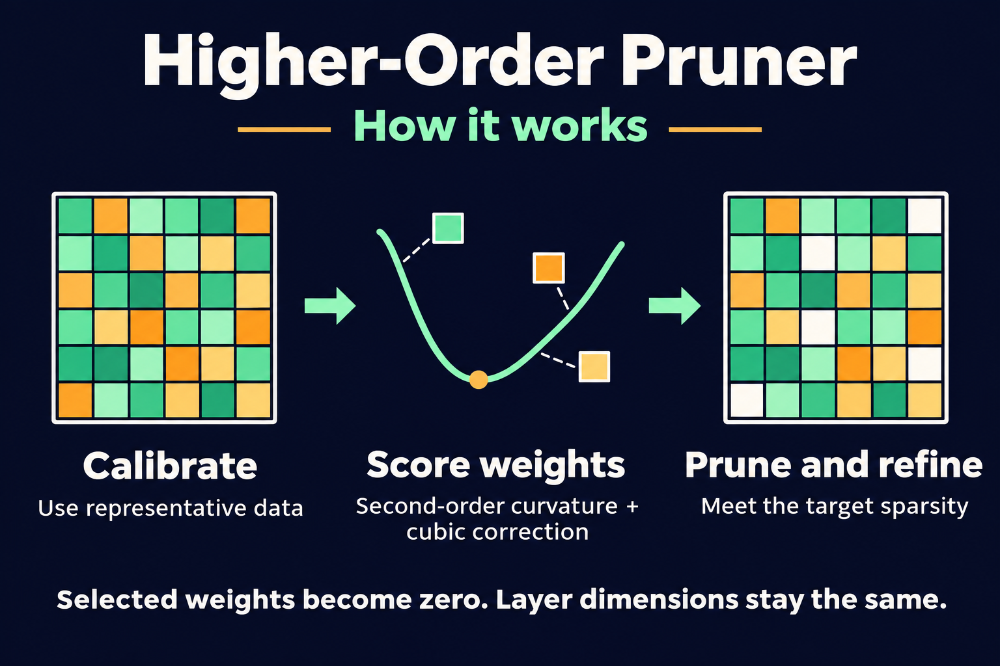
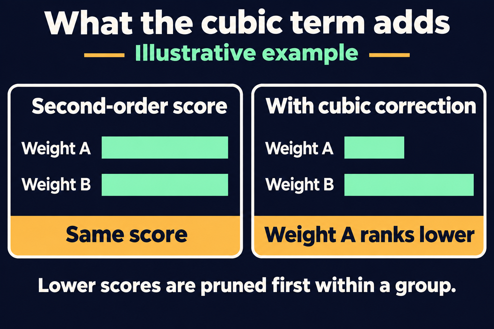
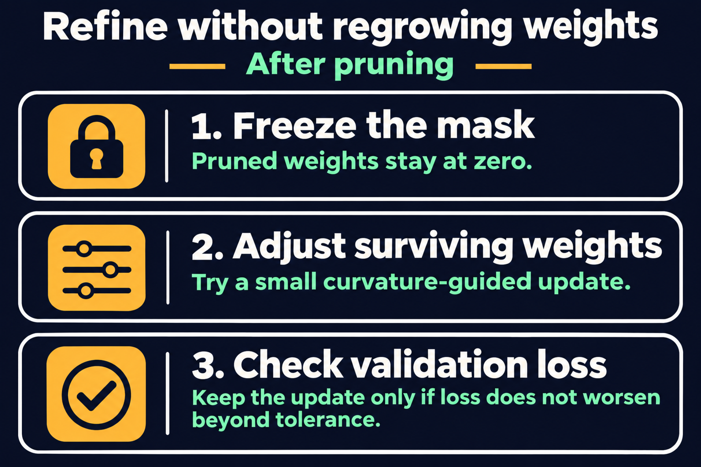
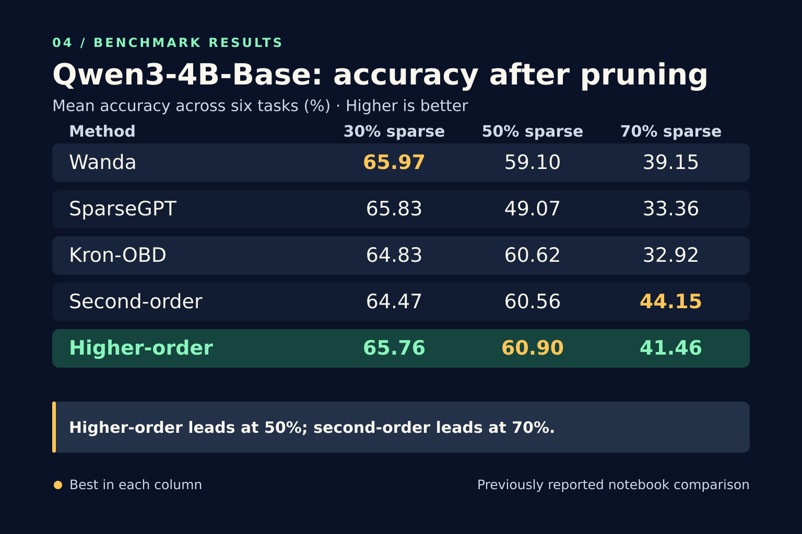
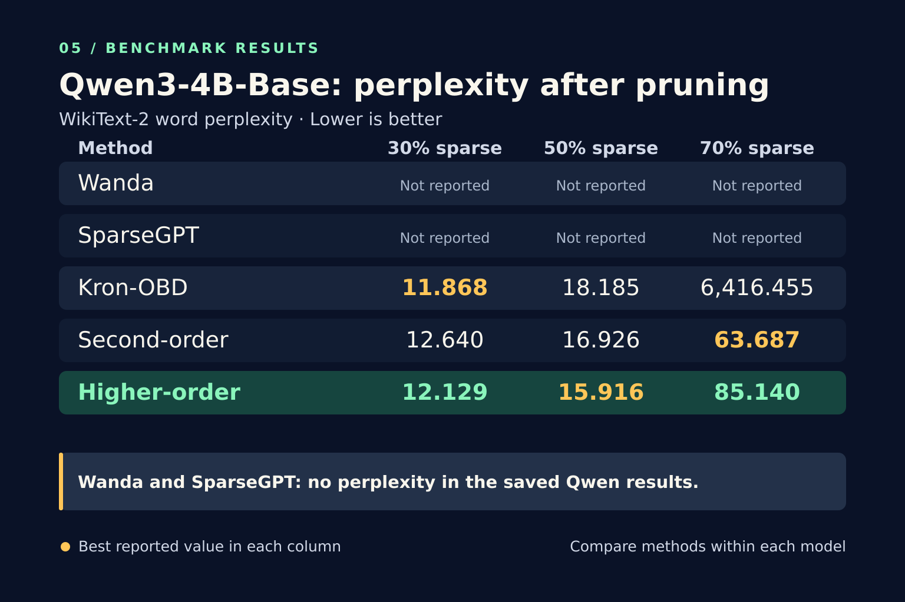

Higher-Order Pruner
Unstructured pruning for PyTorch using a diagonal curvature estimate and a cubic correction.
Get started01 / Method
From dense weights to a fixed sparse mask
Use representative data to score selected linear weights. Prune to the requested sparsity, then try to refine the surviving weights without regrowing the pruned ones.





02 / Results
Qwen3-4B-Base at 30%, 50%, and 70% sparsity
In these notebook runs, higher-order pruning leads the five-method accuracy comparison at 50% sparsity. It also has the lowest reported WikiText-2 word perplexity at 50%. The second-order method leads both comparisons at 70%.




These figures describe experimental notebook runs, not a performance guarantee for the packaged API. Select a figure to view it at full size.
03 / Quickstart
Prune a PyTorch model in place
From the repository root, run python -m pip install .. Supply a model, calibration batches, and a differentiable scalar loss. Pass separate validation batches to check refinement.
from higher_order_pruner import HigherOrderPruner, PruneConfig
pruner = HigherOrderPruner(PruneConfig(sparsity=0.5))
report = pruner.prune(
model, calibration_batches, loss_fn,
validation_batches=heldout_batches,
)
print(report.achieved_sparsity)For the optional Hugging Face adapter, install with python -m pip install ".[hf]". Sparsity is measured over selected weights; zeroing weights does not by itself speed up dense inference.